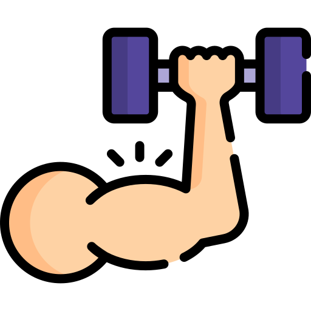

Les différents Types de Signaux
ECG
L'ECG mesure l'activité électrique du cœur, en enregistrant les variations de potentiel électrique à la surface de la peau. Il est utilisé pour évaluer la fonction cardiaque, détecter les anomalies du rythme cardiaque et diagnostiquer les problèmes cardiaques.
EEG
L'EEG enregistre l'activité électrique du cerveau en utilisant des électrodes placées sur le cuir chevelu. Il est utilisé pour diagnostiquer les troubles neurologiques, évaluer l'activité cérébrale pendant le sommeil et la vigilance, et étudier les troubles de l'épilepsie.
EMG
L'EMG enregistre l'activité électrique des muscles, en détectant les signaux produits par les unités motrices lors de la contraction musculaire. Il est utilisé pour diagnostiquer les troubles musculaires et neurologiques, évaluer la fonction musculaire et guider la rééducation.

Mesures Glycémique
La mesure de la glycémie évalue la concentration de glucose dans le sang. Elle est utilisée pour diagnostiquer et surveiller le diabète, ainsi que pour ajuster les traitements insuliniques et l'alimentation.
Mesures d'Oxygène Dissous
La mesure de l'oxygène dissous évalue la quantité d'oxygène disponible dans un fluide biologique, comme le sang ou les tissus. Elle est utilisée pour surveiller la saturation en oxygène, évaluer la fonction respiratoire et diagnostiquer les problèmes d'oxygénation.

Mesures d'Hormones
La mesure des hormones évalue la concentration de différentes hormones dans le sang ou d'autres fluides biologiques. Elle est utilisée pour diagnostiquer les troubles endocriniens, évaluer la fonction hormonale et surveiller les traitements hormonaux.
Tension Artérielle
La tension artérielle mesure la force exercée par le sang contre les parois des artères. Elle est utilisée pour évaluer la pression artérielle, diagnostiquer l'hypertension et surveiller la santé cardiovasculaire.
Débit Cardiaque
Le débit cardiaque mesure le volume de sang pompé par le cœur par unité de temps. Il est utilisé pour évaluer la fonction cardiaque, diagnostiquer les problèmes de débit sanguin et évaluer la réponse à un traitement.

Force Musculaire
La force musculaire mesure la capacité des muscles à générer une force. Elle est utilisée pour évaluer la fonction musculaire, diagnostiquer les troubles neuromusculaires et guider la rééducation.
Sons du Coeur
Les sons du cœur sont des sons spécifiques produits par les valves cardiaques. Ils sont utilisés pour évaluer la fonction cardiaque, détecter les anomalies du rythme cardiaque et diagnostiquer les problèmes cardiaques.